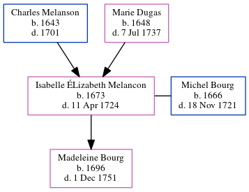

Isabelle Bourg (née Melancon) 1673 - 1724
[ Home ] | [ Calendar ] | [ Surnames Index ] | [ Census Index ] | [ Family History ]The child of Charles Melanson and Marie Dugas, Isabelle Melancon, the 8 times great-grandmother of Michele Copp (née Phillips), was born in Port Royal, Acadia, Nova Scotia, Canada in 16731,2 and married Michel Bourg (with whom she had 1 child, Madeleine) in Port Royal, , New Brunswick, Canada in 1689.
She died in Port Royal on Apr 11, 1724.
Parents
- Charles was born in 1643
- Marie was born in 1648
Children
- Madeleine was born in 1696
Citations
- Family Data Collection - Births Online publication - Provo, UT, USA: The Generations Network, Inc., 2001.
- Family Data Collection - Individual Records Online publication - Provo, UT, USA: The Generations Network, Inc., 2000.
Family Tree
Generated by ged2site. Last updated on Jun 6, 2024